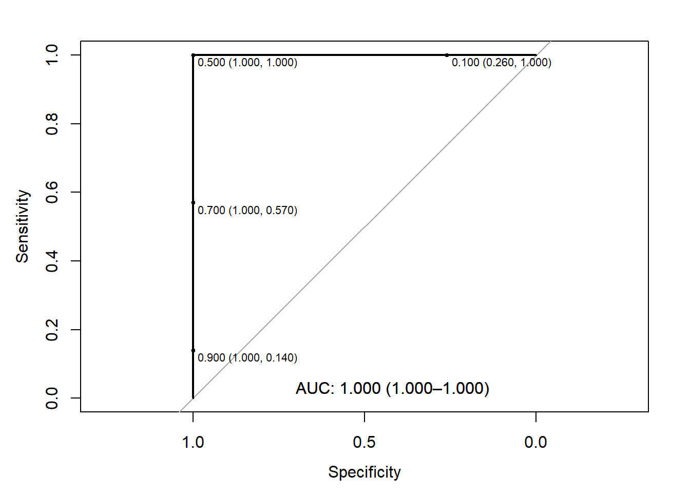

This page is part of the University of Colorado-Anschutz Medical Campus’ BIOS 6618 Recitation collection. To view other questions, you can view the BIOS 6618 Recitation collection page or use the search bar to look for keywords.
ROC Curves
Receiver operating characteristic (ROC) curves are a fantastic resource to summarize the potential overall predictive utility of a continuous predictor for a binary outcome. Instead of evaluate a single threshold for its sensitivity and specificity, we can instead plot all possible thresholds to identify the trade-offs in performance.
A Perfect Predictor
A perfect predictor will classify all cases and controls without any inaccuracy and has an area under the curve (AUC) of 1. Let’s simulate data where this holds true and see what the ROC curve looks like:
Code
library(pROC) # load package for ROC curveset.seed(511111) # set seed for reproducibilityn_case <-100# sample size for casesn_control <-100# sample size for controls# simulate hypothetical predictor for cases and controls## this scenario has perfect discrimination (i.e., no overlap)case <-runif(n=n_case, min=0.501, max=1)control <-runif(n=n_control, min=0, max=0.5)# create data frame to useroc_dat1 <-data.frame(pred=c(case,control), out=c( rep(1,n_case), rep(0,n_control)) )# plot ROC with AUCroc1 <-roc(out ~ pred, data=roc_dat1, ci=T)
Warning in ci.auc.roc(roc, ...): ci.auc() of a ROC curve with AUC == 1 is
always 1-1 and can be misleading.
We can see in the output that (1) it informs us what measure is a control/case, (2) the direction it is assuming for classification of cases and controls (i.e., controls < cases here), and (3) that our estimate may be misleading because we appear to have perfect prediction.
We can also modify the code to request (select) thresholds are added with the value of (specificity, sensitivity) included:
Code
# add select thresholdsplot(roc1, print.auc=T, print.auc.x=0.7, print.auc.y=0.05, print.thres=c(0.1,0.5,0.7,0.9), print.thres.cex=0.7) # note, print.thres has many options; cex controls size

From this figure we can see that the “optimal” threshold is likely 0.5 (i.e., predict controls if <0.5) since it has 100% specificity and sensitivity.
We can also note if we did choose a threshold of 0.7, we’d have 100% specificity (i.e., all controls correctly predicted), but our sensitivity drops to 57% (i.e., only 57% of cases correctly predicted).
A Decent Predictor
Let’s simulate data where we have a decent predictor but it isn’t perfect and evaluate the “best” threshold using Youden’s J-index (\(max(se+sp)\)) and the closest top-left (\(min((1-se)^2+(1-sp)^2)\)) methods:
Code
set.seed(511111) # set seed for reproducibilityn_case <-100# sample size for casesn_control <-100# sample size for controls# simulate hypothetical predictor for cases and controls## this scenario is better than a coin flip but not perfectcase <-rbeta(n=n_case, shape1=2, shape2=1)control <-rbeta(n=n_control, shape1=1, shape2=2)# create data frame to useroc_dat2 <-data.frame(pred=c(case,control), out=c( rep(1,n_case), rep(0,n_control)) )# plot ROC with AUCroc2 <-roc(out ~ pred, data=roc_dat2, ci=T)
The “best” threshold is controls < 0.5017609, which is in agreement for both approaches. We can see from our own figure that the 0.5 threshold has very similar sensitivity and specificity.
There are two interpretations of the AUC that are both correct:
An AUC of 0.855 > 0.50, suggesting the score as a predictive tool is better than random chance (with the specific trade-off in sensitivity and specificity depending on the chosen threshold). Additionally, the 95% CI excludes 0.5, suggesting the AUC is significantly different from random chance.
For any randomly selected pair of one case and one control, the probability that the case is scored “more severely” is 0.855. Additionally, the 95% CI excludes 0.5, suggesting the probability is 0.804 at the lower end of the interval.
We can verify the second interpretation by randomly sampling a bunch of cases and controls and summarizing how often cases are greater than controls:
Code
set.seed(9182)counter <-0num_samps <-100000for(i in1:num_samps){# randomly sample one case from data frame, one control## note, code written to be generalizable to other n_case, n_control sample_case <-sample(x=1:n_case, size=1, replace=F) # 1:100 rows in data frame with n_case=100 sample_control <-sample(x=(n_case+1):(n_case+n_control), size=1, replace=F) # 101:200 rows in data frame with n_case=n_control=100if( roc_dat2$pred[sample_control] < roc_dat2$pred[sample_case] ){ counter <- counter +1 } # if control < case, add 1 to counter}counter/num_samps
[1] 0.85707
We see that with 100,000 random pairs of cases/controls, 85.707% of them show a case with a higher score. This helps to confirm our 2nd definition of AUC from above.
A Less Decent Predictor
Let’s simulate data with a less ideal predictor (i.e., closer to AUC of 0.5), where the cases are uniformly distributed from 0 to 1, but the controls follow a Beta(2,4) distribution (i.e., more concentrated towards lower values, but can span the range):
Code
set.seed(511111) # set seed for reproducibilityn_case <-100# sample size for casesn_control <-100# sample size for controls# simulate hypothetical predictor for cases and controls## this scenario is better than a coin flip but not perfectcase <-runif(n=n_case, min=0, max=1)control <-rbeta(n=n_control, shape1=2, shape2=4)# create data frame to useroc_dat3 <-data.frame(pred=c(case,control), out=c( rep(1,n_case), rep(0,n_control)) )# plot ROC with AUCroc3 <-roc(out ~ pred, data=roc_dat3, ci=T)
The AUC here is 0.618, which is still significant although the lower limit of our CI goes toward 0.5. We can also note that the Youden’s J-index and closest top-left, while similar, no longer recommend the same threshold.
This raises the question of what we might want to do with this predictor. Here, we can see that it generally does better at higher values of specificity (i.e., true negatives) and doesn’t have stellar sensitivity (i.e., true positives). We could:
Choose one of the “best” thresholds considering it balances sensitivity and specificity.
Choose a threshold that favors one property at the expense of the other. For example, thresholds <0.7 has 100% specificity, but only 21% sensitivity. This may be useful in practice (i.e., the utility of the test) depending on the prevalence and/or if we are using this test in conjunction with other test results.
Little-to-No Effect Predictor
Let’s simulate data where there isn’t really much of an effect:
Code
set.seed(511111) # set seed for reproducibilityn_case <-100# sample size for casesn_control <-100# sample size for controls# simulate hypothetical predictor for cases and controls## this scenario is better than a coin flip but not perfectcase <-rbeta(n=n_control, shape1=1.05, shape2=1)control <-rbeta(n=n_control, shape1=1, shape2=1.05)# create data frame to useroc_dat4 <-data.frame(pred=c(case,control), out=c( rep(1,n_case), rep(0,n_control)) )# plot ROC with AUCroc4 <-roc(out ~ pred, data=roc_dat4, ci=T)
In our final example, we see that the AUC is near 0.5 and its 95% CI includes the null of 0.5. Therefore, we’d likely conclude that there is little use of this predictor overall. However, we might convince ourselves a given threshold would be useful in a broader context (e.g., different prevalence, multiple tests, etc.).
Source Code
---title: "ROC Curves Under Different Strengths of Predictors"author: name: Alex Kaizer roles: "Instructor" affiliation: University of Colorado-Anschutz Medical Campustoc: truetoc_float: truetoc-location: leftformat: html: code-fold: show code-overflow: wrap code-tools: true---```{r, echo=F, message=F, warning=F}library(kableExtra)library(dplyr)```This page is part of the University of Colorado-Anschutz Medical Campus' [BIOS 6618 Recitation](/recitation/index.qmd) collection. To view other questions, you can view the [BIOS 6618 Recitation](/recitation/index.qmd) collection page or use the search bar to look for keywords.# ROC CurvesReceiver operating characteristic (ROC) curves are a fantastic resource to summarize the potential overall predictive utility of a continuous predictor for a binary outcome. Instead of evaluate a single threshold for its sensitivity and specificity, we can instead plot all possible thresholds to identify the trade-offs in performance.## A Perfect PredictorA *perfect* predictor will classify all cases and controls without any inaccuracy and has an area under the curve (AUC) of 1. Let's simulate data where this holds true and see what the ROC curve looks like:```{r, warnings=F, message=F}library(pROC) # load package for ROC curveset.seed(511111) # set seed for reproducibilityn_case <-100# sample size for casesn_control <-100# sample size for controls# simulate hypothetical predictor for cases and controls## this scenario has perfect discrimination (i.e., no overlap)case <-runif(n=n_case, min=0.501, max=1)control <-runif(n=n_control, min=0, max=0.5)# create data frame to useroc_dat1 <-data.frame(pred=c(case,control), out=c( rep(1,n_case), rep(0,n_control)) )# plot ROC with AUCroc1 <-roc(out ~ pred, data=roc_dat1, ci=T)plot(roc1, print.auc=T, print.auc.x=0.7, print.auc.y=0.05)```We can see in the output that (1) it informs us what measure is a control/case, (2) the direction it is assuming for classification of cases and controls (i.e., controls < cases here), and (3) that our estimate may be misleading because we appear to have perfect prediction.We can also modify the code to request (select) thresholds are added with the value of (specificity, sensitivity) included:```{r}# add select thresholdsplot(roc1, print.auc=T, print.auc.x=0.7, print.auc.y=0.05, print.thres=c(0.1,0.5,0.7,0.9), print.thres.cex=0.7) # note, print.thres has many options; cex controls size```From this figure we can see that the "optimal" threshold is likely 0.5 (i.e., predict controls if <0.5) since it has 100% specificity and sensitivity.We can also note if we did choose a threshold of 0.7, we'd have 100% specificity (i.e., all controls correctly predicted), but our sensitivity drops to 57% (i.e., only 57% of cases correctly predicted).## A Decent PredictorLet's simulate data where we have a decent predictor but it isn't perfect and evaluate the "best" threshold using Youden's J-index ($max(se+sp)$) and the closest top-left ($min((1-se)^2+(1-sp)^2)$) methods:```{r, warnings=F}set.seed(511111) # set seed for reproducibilityn_case <-100# sample size for casesn_control <-100# sample size for controls# simulate hypothetical predictor for cases and controls## this scenario is better than a coin flip but not perfectcase <-rbeta(n=n_case, shape1=2, shape2=1)control <-rbeta(n=n_control, shape1=1, shape2=2)# create data frame to useroc_dat2 <-data.frame(pred=c(case,control), out=c( rep(1,n_case), rep(0,n_control)) )# plot ROC with AUCroc2 <-roc(out ~ pred, data=roc_dat2, ci=T)plot(roc2, print.auc=T, print.auc.x=0.7, print.auc.y=0.05, print.thres=seq(0.1,0.9,0.1), print.thres.cex=0.7)coords(roc2, x='best', best.method='youden')coords(roc2, x='best', best.method='closest.topleft')```The "best" threshold is controls < 0.5017609, which is in agreement for both approaches. We can see from our own figure that the 0.5 threshold has very similar sensitivity and specificity.There are two interpretations of the AUC that are both correct:1. An AUC of 0.855 > 0.50, suggesting the score as a predictive tool is better than random chance (with the specific trade-off in sensitivity and specificity depending on the chosen threshold). Additionally, the 95% CI excludes 0.5, suggesting the AUC is significantly different from random chance.2. For any randomly selected pair of one case and one control, the probability that the case is scored "more severely" is 0.855. Additionally, the 95% CI excludes 0.5, suggesting the probability is 0.804 at the lower end of the interval.We can verify the second interpretation by randomly sampling a bunch of cases and controls and summarizing how often cases are greater than controls:```{r}set.seed(9182)counter <-0num_samps <-100000for(i in1:num_samps){# randomly sample one case from data frame, one control## note, code written to be generalizable to other n_case, n_control sample_case <-sample(x=1:n_case, size=1, replace=F) # 1:100 rows in data frame with n_case=100 sample_control <-sample(x=(n_case+1):(n_case+n_control), size=1, replace=F) # 101:200 rows in data frame with n_case=n_control=100if( roc_dat2$pred[sample_control] < roc_dat2$pred[sample_case] ){ counter <- counter +1 } # if control < case, add 1 to counter}counter/num_samps```We see that with 100,000 random pairs of cases/controls, 85.707% of them show a case with a higher score. This helps to confirm our 2nd definition of AUC from above.## A Less Decent PredictorLet's simulate data with a less ideal predictor (i.e., closer to AUC of 0.5), where the cases are uniformly distributed from 0 to 1, but the controls follow a Beta(2,4) distribution (i.e., more concentrated towards lower values, but can span the range):```{r, warnings=F}set.seed(511111) # set seed for reproducibilityn_case <-100# sample size for casesn_control <-100# sample size for controls# simulate hypothetical predictor for cases and controls## this scenario is better than a coin flip but not perfectcase <-runif(n=n_case, min=0, max=1)control <-rbeta(n=n_control, shape1=2, shape2=4)# create data frame to useroc_dat3 <-data.frame(pred=c(case,control), out=c( rep(1,n_case), rep(0,n_control)) )# plot ROC with AUCroc3 <-roc(out ~ pred, data=roc_dat3, ci=T)plot(roc3, print.auc=T, print.auc.x=0.7, print.auc.y=0.05, print.thres=seq(0.1,0.9,0.1), print.thres.cex=0.7)coords(roc3, x='best', best.method='youden')coords(roc3, x='best', best.method='closest.topleft')```The AUC here is 0.618, which is still significant although the lower limit of our CI goes toward 0.5. We can also note that the Youden's J-index and closest top-left, while similar, no longer recommend the same threshold.This raises the question of what we might want to do with this predictor. Here, we can see that it generally does better at higher values of specificity (i.e., true negatives) and doesn't have stellar sensitivity (i.e., true positives). We could:1. Choose one of the "best" thresholds considering it balances sensitivity and specificity.2. Choose a threshold that favors one property at the expense of the other. For example, thresholds <0.7 has 100% specificity, but only 21% sensitivity. This may be useful in practice (i.e., the utility of the test) depending on the prevalence and/or if we are using this test in conjunction with other test results.## Little-to-No Effect PredictorLet's simulate data where there isn't really much of an effect:```{r, warnings=F}set.seed(511111) # set seed for reproducibilityn_case <-100# sample size for casesn_control <-100# sample size for controls# simulate hypothetical predictor for cases and controls## this scenario is better than a coin flip but not perfectcase <-rbeta(n=n_control, shape1=1.05, shape2=1)control <-rbeta(n=n_control, shape1=1, shape2=1.05)# create data frame to useroc_dat4 <-data.frame(pred=c(case,control), out=c( rep(1,n_case), rep(0,n_control)) )# plot ROC with AUCroc4 <-roc(out ~ pred, data=roc_dat4, ci=T)plot(roc4, print.auc=T, print.auc.x=0.7, print.auc.y=0.05, print.thres=seq(0.1,0.9,0.1), print.thres.cex=0.7)coords(roc4, x='best', best.method='youden')coords(roc4, x='best', best.method='closest.topleft')```In our final example, we see that the AUC is near 0.5 and its 95% CI includes the null of 0.5. Therefore, we'd likely conclude that there is little use of this predictor overall. However, we might convince ourselves a given threshold would be useful in a broader context (e.g., different prevalence, multiple tests, etc.).